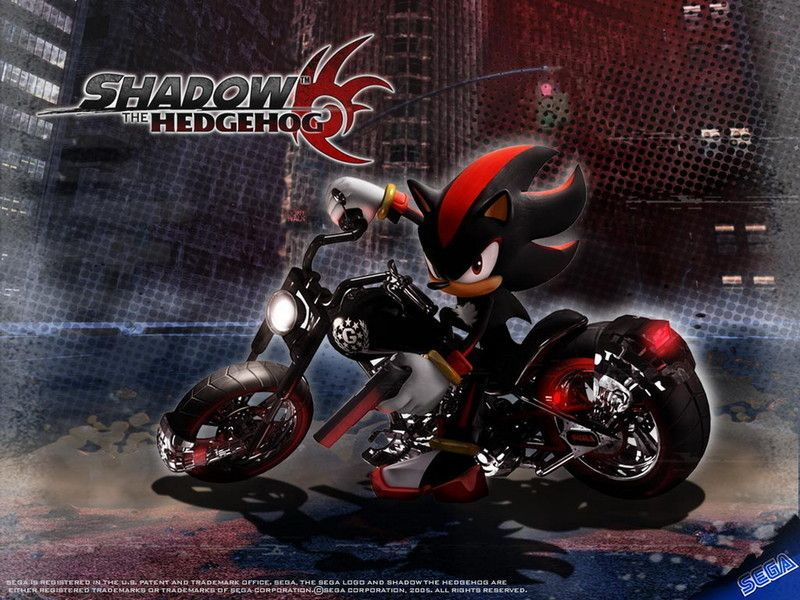
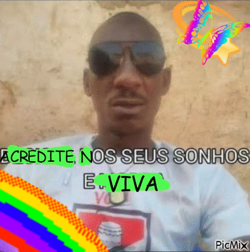
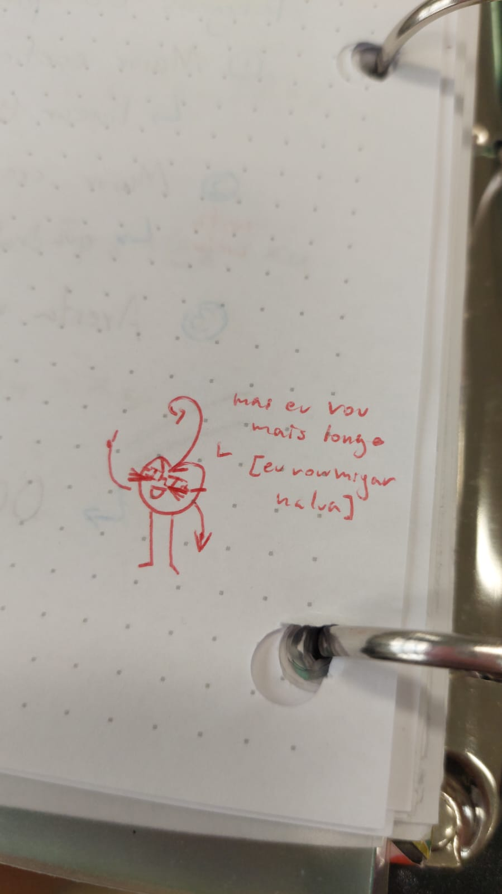
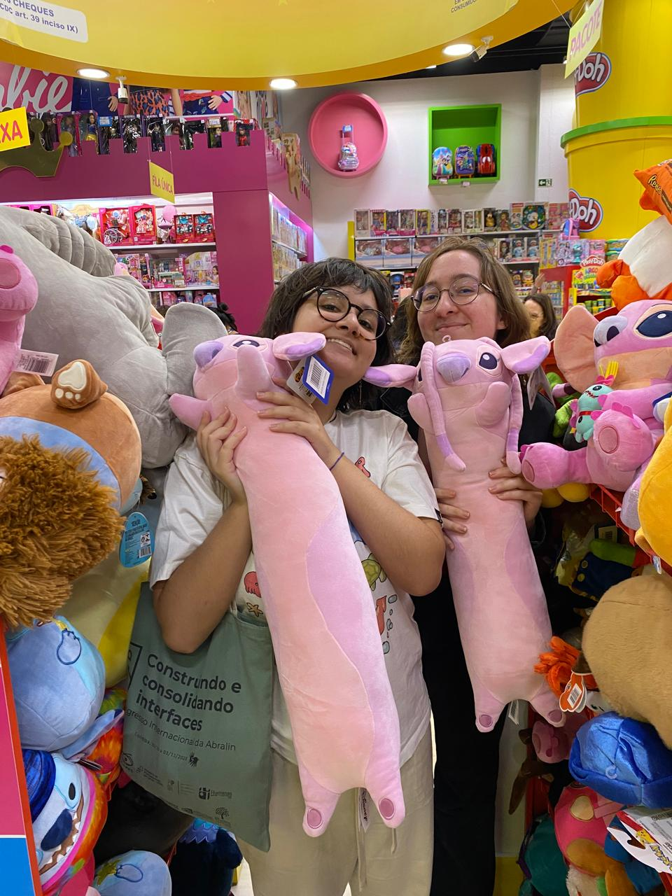

se você quer saber como dominar a magia, conhecer os calendários como a palma de sua mão e EXPLODIR AS MENTES dos seus colegas meros mortais, dê uma olhada no tutorial
clique no link ao lado do Mago da Home, e você será mais sábio.
segunda, 26 de janeiro de 2026, 09:11
palavras são bonitas :)
oii 8)
Só pra registrar, eu tou lendo um livro pelo Substack chamado Sofistas Paulistas eu tou gostando bastente,
até agora o autor publicou até o capítulo 12 só, ele tá fazendo um sistema parecido com folhetins, publicando um pouquinho a cada mês.
E em um dos capítulos, um dos personagens principais tá enfrentando uma tempestadezassa e o autor descreve a cena:
"Timóteo saltava recém-nascidos córregos, desviava de granizos e mergulhava em penumbras para chegar ao endereço do cliente da vez."
É primavera aqui em Curitiba, e chove MUITO. Além disso, aqui no poli tem muito acúmulo de água correndo pra lá e pra cá procurando bueiro. Recém-nascidos córregos é muito bonitinho.
Recém-nascidos córregos.
quinta, 09 de outubro de 2025, 14:51
o mago que eu sou
oii 8)
Estou (novamente) viciada em calcular o dia da semana, nn sei se vcs viram o mini maguinho digital que implementa a magia das doomsdays em JS q tá na home.
Além disso eu descobri q o John Conway q é o Mestre dos Magos, o mano q inventou o algoritmo, conseguia fazer em DOIS SEGUNDOS???
Eu tou muito pra trás cara, minha média é 15s e meu recorde é 5s. Meta dms ser que nem o mestre dos magos.
Mas logo logo sai o Guia: Seja um Mago dos Calendários, então montaremos uma guilda que dominará o mundo... sabendo o dia da semana.
A e eu fui no aniversário da zine gororoba fim de semana passado e eu fui de Ana Formiga uma bruxa q vivia aqui em Curitiba no século 19!! Foi uma semana muito cheia de feitiçaria.
quinta, 09 de outubro de 2025, 14:29
o diabo mano
oii 8)
o diabo anda de motoca
deus que foi bobo, quem é onipresente nn pode andar de motoca
gurizão devia ter sido mais onisciente nessa daí ngl
motoca anda, deus nn anda, pq ele já tá lá ou sla oq
...
CAN YOU SEE ALL OF ME WALK INTO MY MYSTERY

terça, 26 de agosto de 2025, 20:18
acredite nos seus sonhos e viva
oii 8)
tomei nescau, comi morango (normal, sem amor) e bisnaguinha com presunto e queijo
dancei HOT-TO-GO do fitness marshall
a vida é linda.

quinta, 21 de agosto de 2025, 14:23
i <3 nerds
oii 8)
seguem gifs meus de emo PQ O INSTAGRAM NAO DEIXA POSTAR GIF >:((((((((
MORRA ZUQUENBERNE!!!! >:((((((((
sexta, 7 de agosto de 2025, 22:59
blablabla sobre santos
oii 8)
Resolvi fazer um postzão sobre santos pq é tipo top coisas q eu acho mais interessantes sobre a igreja católica,
apesar de eu mesma não ser mais católica.
E... eu acho que é uma mecânica que agnt super consegue traduzir pra nossa vida, de uma maneira completamente não religiosa.
Mas q ainda é mto legal e útil se agnt interpretar religião como ferramenta tlgd? pra nossa vida e pá.
Guedes afirmou ontem na aula de otimização: "Eu vou mais longe!".

Fica a dúvida, será que ele vai mijar na lua? O que ele pensa sobre Shadow o Ouriço?
Farei um exposed no meu tuíter ponto com caso houverem novas informações.
sexta, 11 de abril de 2025, 14:06
primeiro post de 2025
oii 8)
(em abril, eu sei)
"E o CerejAwards???" tá vindo, eu prometo.
"E a aba do New Leaf??? Você abandonou Timtum☆???" não,
eu tava lá todos os dias das férias,,, eu meio q abandonei o blog xp
Mas, um novo semestre começou e ele tá indo muito bem até agora, mercurio retrógrado acabou
e agora vai ser só felicidade, esquece.
Em minha defesa, nn teve prova ainda ent nem começou direito mesmo. Bom semestre, galera!!!
sexta, 11 de abril de 2025, 13:57
★★★2024★★★
stitch fêmea longa
oii 8)
estou sentindo falta da stitch fêmea longa

stitch fêmea longa, sinto sua falta
domingo, 15 de dezembro de 2024, 23:45
FÉRIASS
oii 8)
ACABOU ESSE SEMESTRE GRAÇAS AOS DEUSES!!!
eu tenho TANTOS planos, TANTAS coisas que eu quero fazer, inclusive ser mais ativa aqui no blog!
mas, o primeiro plano posto em execução é jogar Animal Crossing New Leaf! Comecei hoje e criei
uma abinha só pra posts relacionados a gameplay, o primeiro já tá no ar!
PS: O Sereja Awards, premiação dos melhores sites do DINF, estará em desenvolvimento essas férias também
e será lançado no primeiro dia de aula do semestre que vem! Vejo vocês lá!
quinta, 12 de novembro de 2024, 11:48
MEU DEUS EU TERMINEI DE VER AS PÁGINAS!
oii 8)
Então, eu tava com um projeto de visitar todas as páginas do DINF pra recolher inspiração e encontrar umas páginas legais.
Eu comecei ali +- na segunda semana de outubro e finalmente terminei.
Vou fazer uma listinha dos meus favoritos, eu encontrei muita página legal, muito joguinho e quero linkar eles por aqui.
Provavelmente não vai ser no blog, acho q seria uma entrada meio grandinha demais praqui.
Tava pensando em ter uma página dedicada a pequena web, com links úteis, tutoriais, comunidades e o porquê da small web, acho que
os meus favs do domínio do dinf se encaixariam bem lá.
Enfim, fiquem ligados, logo logo sairão os resultados do maior e mais renomado prêmio de web-design: LINK CITADO PELA SOFIA!!! edição 10/24.
P.S.: se vc quer passar por todos que nem eu, a lista de páginas fica em /home/html/inf
quinta, 24 de outubro de 2024, 17:55
primeira entrada!
oii 8)
no momento estou eu e meus amigos
Thigas Midia ,
Guto e Saibert
no Lab12 do Departamento de Informática da UFPR oficialmente inaugurando
esse blog!